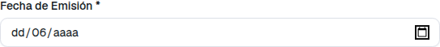
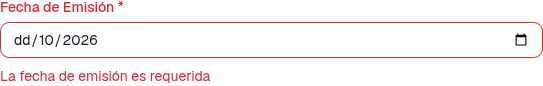
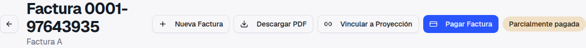
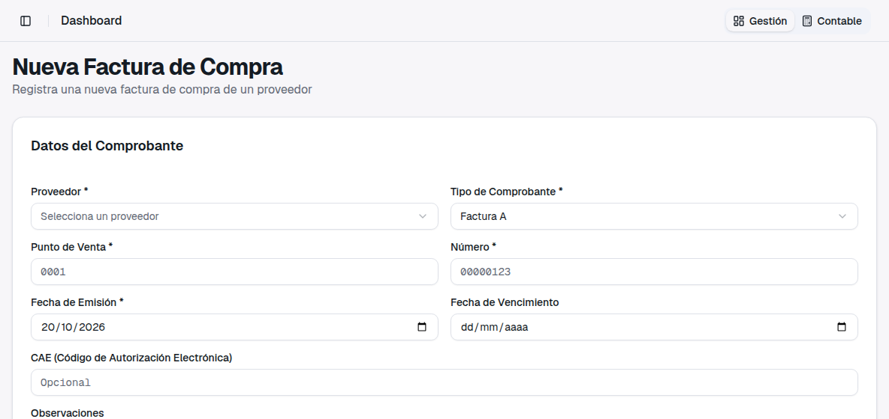
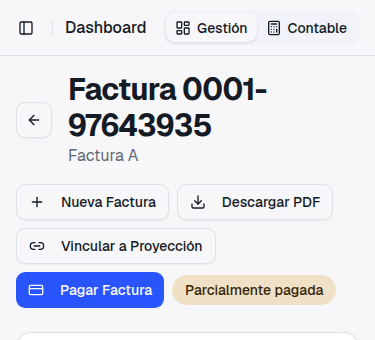

Ticket 782 · Comercial → Compras → Facturas de Compra
Cargar facturas de compra más rápido
Guía de presentación — qué pediste, qué cambió, cómo se usa paso a paso y qué no cambia
1. Qué pediste
"Estoy poniéndome al día con la carga de facturas y podría tener un botón de 'nueva factura' o
algo así y no volver de cero a entrar a facturas compra, 'nueva factura'. Y también, algo que
siempre no anda bien, es la fecha. Ponés el día, bien, ponés mes, y la fecha se pone DD.
Después la podés corregir pero SIEMPRE :)"
— Elizabeth Perez, ticket 782
Eran dos cosas distintas, y las dos están resueltas:
La fecha se borraba al tipearla. Escribías el día, pasabas al mes y el día
volvía a quedar en blanco (dd).
Faltaba un atajo para cargar la siguiente factura. Después de guardar una
factura había que volver al listado y entrar otra vez a Nueva Factura.
2. La fecha ya no se borra al tipearla
Antes
Al empezar a escribir el mes, el campo se vaciaba y solo quedaba el mes. Había que volver a
escribir el día (o elegir la fecha en el calendario).

Tipeando 15 y 06: el día y el año se pierden.
Ahora
La fecha se escribe de corrido, como en cualquier campo: día, mes y año. Lo que tipeás
queda.
Las mismas teclas: queda 15/06/2026.
No era solo en Compras
El mismo problema estaba en otras pantallas donde se escribe una fecha, y quedó arreglado en
todas:
Facturas de compra y de venta, y presupuestos (Fecha de Emisión).
Recibos, órdenes de pago y devoluciones a socios (Fecha).
Reportes de Compras y de Ventas (Desde y Hasta).
Mientras una de las dos fechas está a medio escribir, el botón Generar
espera a que la termines.
Asiento manual en Contabilidad. Ahí era peor: al empezar a escribir el mes aparecía la
pantalla Algo salió mal y se perdía lo que estaba cargado en el
asiento.
Si guardás con la fecha incompleta
Si borrás una parte de la fecha (por ejemplo el día) y guardás, el sistema no guarda y te
avisa en el mismo campo.

Día borrado y clic en Guardar Factura: el campo se marca en
rojo con La fecha de emisión es requerida.
3. Botón "Nueva Factura" en el detalle
Cuando guardás una factura de compra, el sistema te muestra su detalle. Ahora ese detalle tiene
el botón Nueva Factura arriba, al lado de
Descargar PDF, en el lugar que marcaste en la captura del ticket.
Cargá y guardá la factura como siempre, desde Comercial → Compras → Facturas de
Compra → Nueva Factura.
En el detalle, hacé clic en Nueva Factura.

El botón nuevo es el primero de la fila. Los demás siguen donde estaban.
Se abre una factura nueva, vacía, lista para la siguiente. La fecha de emisión
arranca en el día de hoy, igual que cuando entrás desde el listado.

Comercial → Compras → Nueva Factura de Compra, sin pasar por el listado.

En el celular los botones se acomodan en varias líneas debajo del título.
Antes, en pantallas chicas, quedaban cortados hacia la derecha y había que desplazar la página
de costado para llegar a ellos.
4. Qué hay que configurar
Nada
Los cambios funcionan solos. El botón Nueva Factura lo ven las
personas que tienen permiso para crear facturas de compra; a quien solo puede consultarlas no le
aparece.
5. Qué no cambia
✓
Las fechas se guardan igual que
antes: una factura del 15/06 sigue quedando con fecha 15/06, también en los asientos y reportes.
✓
Podés seguir eligiendo la fecha con
el calendario del campo, además de tipearla.
✓
El botón no copia datos de la
factura anterior: abre una factura en blanco, igual que desde el listado.
✓
Los demás campos de fecha del
sistema (vencimientos, cheques, egresos, remitos y otros) ya funcionaban bien y no se tocaron.
6. Algo para conversar
Si cargás muchas facturas del mismo proveedor o de la misma
fecha, podríamos sumar un botón Guardar y cargar otra en el
formulario, que guarde y abra la siguiente con el proveedor y la fecha ya puestos. ¿Te serviría?